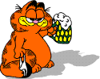
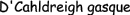
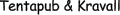
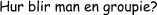

 D-Group är D-Sektionens festeri vid Linköpings universitet. Festeriet har till uppgift att roa sektionens medlemmar då dessa inte pluggar. Detta gör vi genom att arrangera en del evenemang och fester under året.
D-Group består av 13 mer eller mindre galna personer som jobbar helt ideellt för att göra detta läsår kul! Vi har en omsättning på ca 1 miljon kr under året varav det mesta kommer från DömD. Under ett år är det tänkt att vi ska gå plus-minus noll, vilket betyder att du alltid får full valuta allt du köper av oss.
Förutom att fixa fester representerar vi dessutom vår sektion på andra evenemang. Det blir en hel del gyckel (roliga? framträdanden) samt ganska många tävlingar.


Det går även bra att kontakta våran Chief-groupie
Här följer en del av det vi har sysslat med och vad som komma skall:

Vårt första arrangemang var nollesittningen som gick av stapeln tre veckor in på läsåret.
En sittning för alla blivande ettor, staben, custos samt en del äldre teknologer.
Eftersom förra årets D-Group (la familie D'Cahldreigh) gick med vinst förra året, vilket inte var menat, så var pengarna tvungna att gå tillbaka till sektionsmedlemmarna. Detta skedde genom att vi kunde ordna en kraftigt rabatterad räkkryssning på Roxen i början av hösten.

Enligt traditionen så ordnade vi även detta år en julfest tillsammans med Gläfs. Denna hölls på Folkungaskolan och vi hade ca 230 sittande. Det bjöds på julbord, julklappsutdelning, lekar kring granen samt naturligtvis dans på kvällen.
I slutet av tentaperiod 3 anordnande vi en tentapub med hamburgare och öl i gasquen.
Torsdagen den 3 april är det dax för tentakravall. Vi kommer att ha happy-hour och lajvband och biljetter säljs fr.o.m. den 2 april kl. 22.00 i baljan.

Vårat i särklass största evenemang hålls mellan den 10-12 april. DömD, D-Sektionens Öppna mästerskap i Dart är den fest på året då vi får hit mest folk från andra skolor. Det är dessutom mest deltagare, över 120 lag och 500 lagmedlemmar är med och slåss om förstapriset, en resa till London för hela laget. Läs mer om DömD och vad som händer på våra DömD-sidor.

På D-Sektionens vårmöte väljs Chief- och Cash-groupie. Det är sedan deras jobb att plocka ut nästa års festeri. Alla sektionmedlemmar kan då söka till D-Group (kring maj) och blir då
kallade på en liten intervjue. En groupie ska kunna arbeta i grupp, vara öppen och kunna
ta ansvar. Detta är de viktigaste egenskaperna.
Det handlar inte om att kunna festa mest och värst, utan om att ha roligt och att se till att andra får roligt.
Efter jul tar man dessutom ut två stycken pryosar, som skall läras upp inför nästa års festeriverksamhet. Detta kan man också söka i slutet av januari.

Vi finns oftast på tel: 013 - 31 07 78 (Bellrummet, sektionslokal)
email: dgroup@ctrl-c.liu.se
pg: 44 07 39 -1
D-Sekionens festeri
Kårallen
Linköpings tekniska högskola
581 83 Linköping
Patrik Jonasson
tel: 013 - 26 05 15